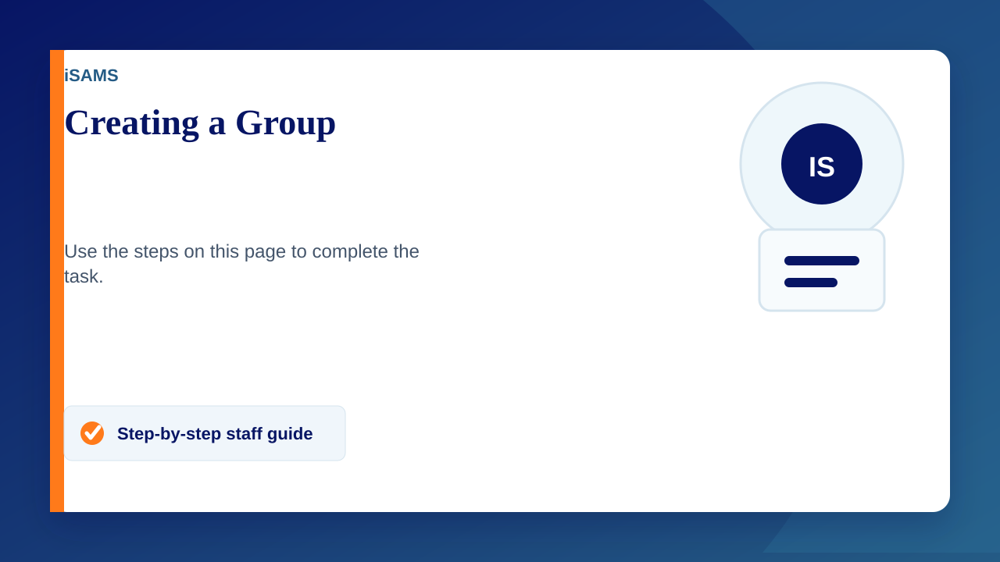
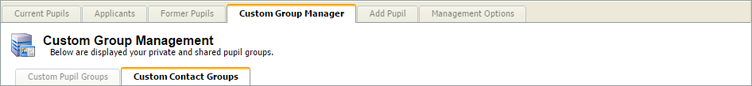
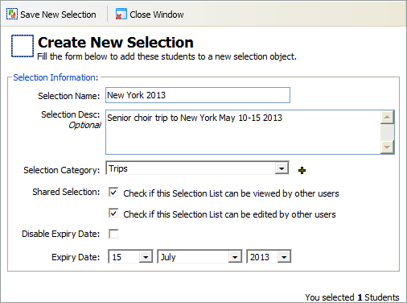
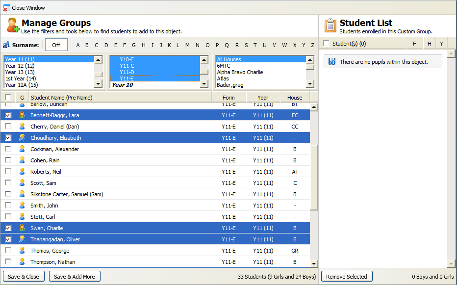
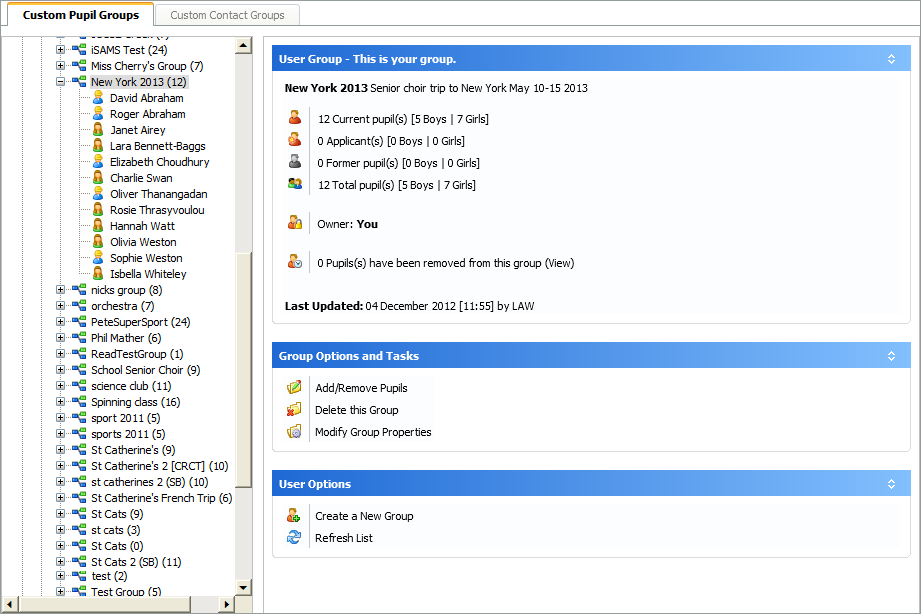

Creating a Group
- Open the Student Manager module.
- Select the Custom Group Manager tab and click Custom Pupil Groups:
- Click Create a New Group.
The Selection Management window is displayed: - Enter the custom student group details
- Click OK to add pupils to the group.
- Use the filters to find the students that you want to select. Hold Ctrl to make multiple selections in the filter boxes.
- Use the checkboxes to select students.
- Click Save & Add More to view your selection.
- Click OK to confirm your selection.
Your selected students are displayed on the right. - Once your custom group is complete, click Save & Close.
- The custom group is listed in the Custom Pupil Groups tree
- Shared groups and private groups are listed separately in the tree. Click on a group to view more details.



